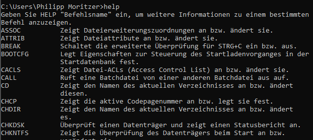
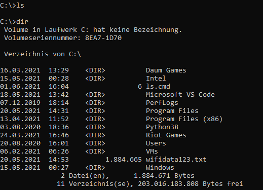
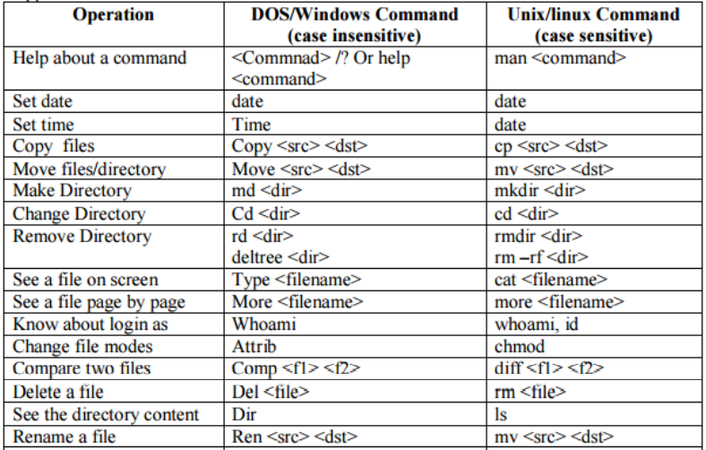

DOS
Philipp Moritzer - 21170004
DOS
- Disk operating system
- Interpreter between user and computer
- Starting DOS
- Start -> All Programs -> Aux programs -> Command Prompt
- Start -> "cmd" -> Enter
- At file Explorer -> (Shift + right-click)
DOS commands
- Internal commands
- memory resident
- ver, vol, date, time, cls, dir, md, cd, path, rd, copy con, type, copy, del, ren, prompt
- External commands
- disk resident
- xcopy, move, fc, doskey, mem, more, sort, find, attrib, deltree, edit, tree
- Capital or small letters are treated the same
help
C:>help

- Similar to Unix man command
- Lists commands
Example:
help dir
Dos commands
- ver: version number
- vol: volume label
- date: display/set current system date
- time: display/set current system time
- cls: clear screen
- dir: list of directories and files
- Switch: /R /P /W /B /L /A
- Path: defines a list of directories for external commands
Add directory to Path:
PATH=%PATH%:c:\test
- rd: delete empty directory
- md: make a new directory
- type: see the contents of an existing file
- del/erase: delete a file
- ren: change the file name
- tree: display directory structure
- prompt=$$: changes prompt symbol
- echo hi > hi.txt: Creates file hi.txt with content hi
- echo hi >> hi.txt: Appends hi to file hi.txt
- copy con hi.txt: Entered Text will be saved to file hi.txt until interrupted by CTRL+Z
- move: moves file(s)
- fc: file compare
- doskey: remember command history
- mem: display total available memory
- atrrib: see attributes of a file
- notepad: start dos editor
- more: see page by page
- sort: arrange data in an order
- find: display lines that has the string
PATH, Redirection
> PATH
> PATH=%PATH%;c:\tmp REM adds c:\temp
> echo %PATH%
> echo aa > aa.txt
> echo aaa >> aa.txt
> type aa.txt 2> err.txt
> type aa.txt err.txt > a3.txt
> copy aa.txt + err.txt a4.txt
Batch files
- File that has a collection of dos command and control commands
- extension is either .bat or .cmd
Example:
dir %*
^z
ls is usable in the dos afterwards

Repeat loop
@echo off
FOR /L %%i IN (1,1,3) DO(
FOR /L %%j IN (1 1 3) DO(
echo i = %%i, j=%%j
)
)
Comparison Unix/doc commands

Network commands
> ipconfig // shows network adapter configuration
> ping 10.10.54.75 // sends ICMP packet to IP Adress and display if there is a response
> telnet 10.10.54.75 // establishes telnet connection with destination
> ftp 10.10.54.75 > establishes ftp connection with destination
- cd public_html
- pwd
- asc
- put my.html
- bi
- mput *.jpg
- dir
- get aa.gif
- !dir
- quit